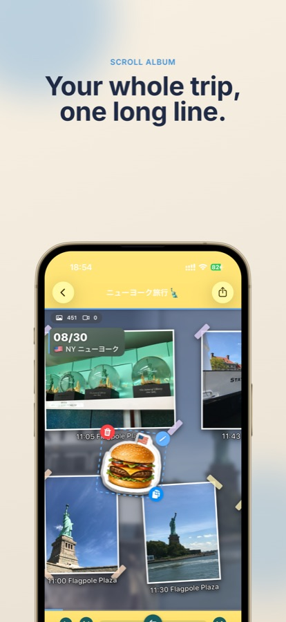
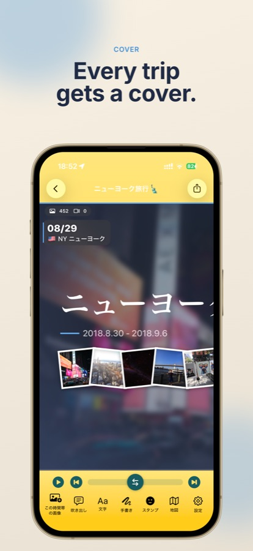
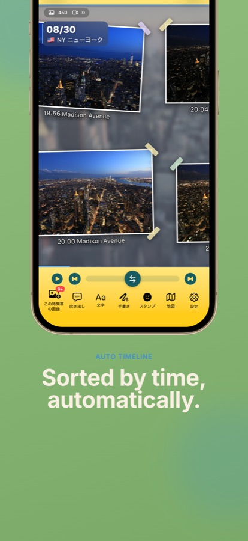
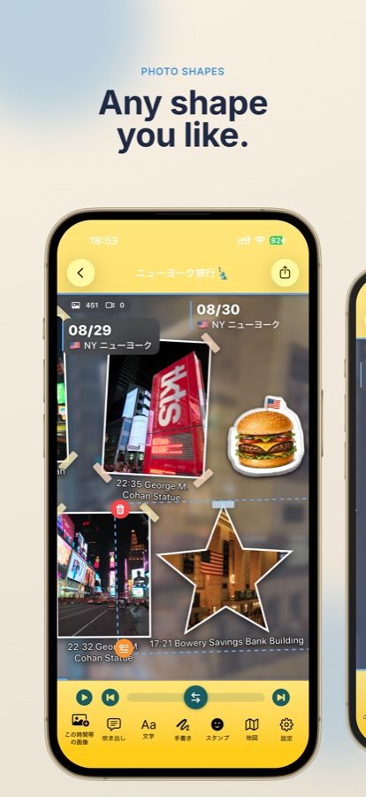
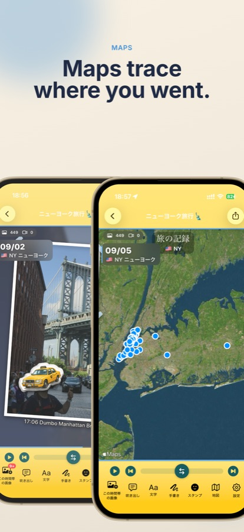
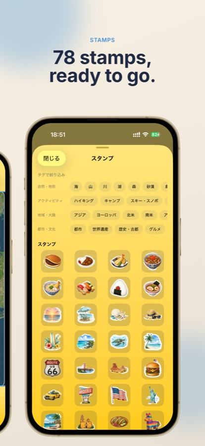
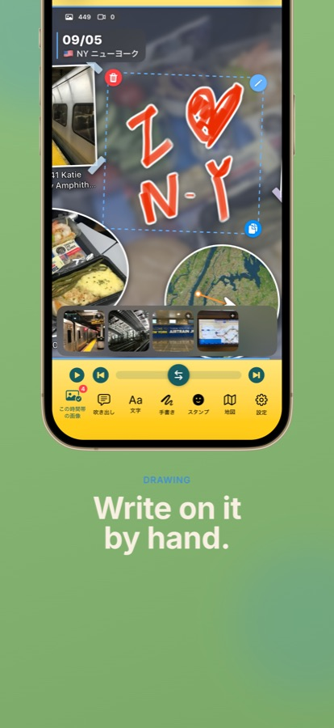
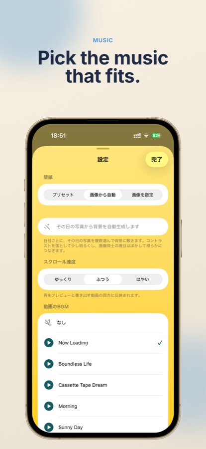
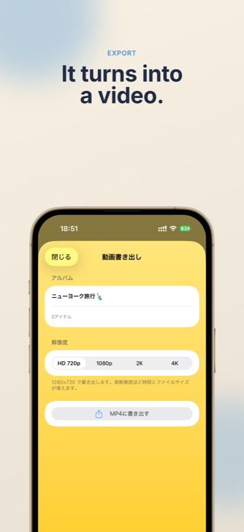
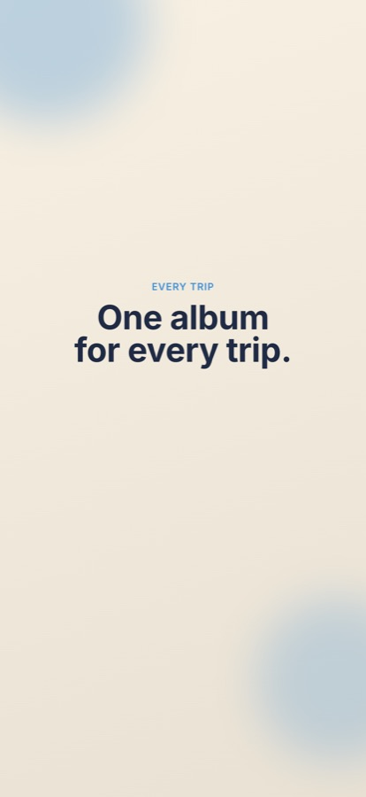

Your whole trip,
one long line.
ScrollAlbum arranges your travel photos and videos along a single long horizontal timeline. Scroll back through the trip, then export the whole thing as a video with music.


The photos you never looked at
become a trip again.
Pick the dates and the rest happens on its own. Decorate however you like.
Just pick the dates
Set the dates of your trip and the app gathers photos and videos from your library into a timeline. It starts with camera shots only, so screenshots don't get mixed in.
Maps trace your journey
Using location data, circular maps mark the spots you visited and route maps follow how you moved. At the end you get a trip record grouped by country or region.
78 built-in stamps
Stamps are placed automatically to match what's in the photo and the country you visited. You can also make your own stamps from your images.
Decorate it your way
Washi tape, tilt, white borders, and ellipse / star / hexagon cutouts. Plus text, speech bubbles, and freehand drawing with your finger or Apple Pencil.
Export as a video
Your timeline exports as a video that scrolls from left to right. Choose HD 720p, 1080p, 2K, or 4K, preview and pick background music, and adjust the scrolling speed.
Your photos stay as they are
This app never deletes or rewrites your photos. You can rotate them or change favorites from here if you want to.
Here's how it looks
Drag, or use the left and right arrow keys.










Three steps
Pick the dates
Set the day you left and the day you came back. The app collects everything from your photo library.
Scroll and decorate
Look back through the timeline and add stamps or handwriting. Resize and reshape photos however you like.
Export the video
Choose the music and resolution, hit export, and it's done. Share it straight from there.